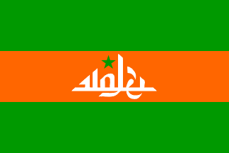
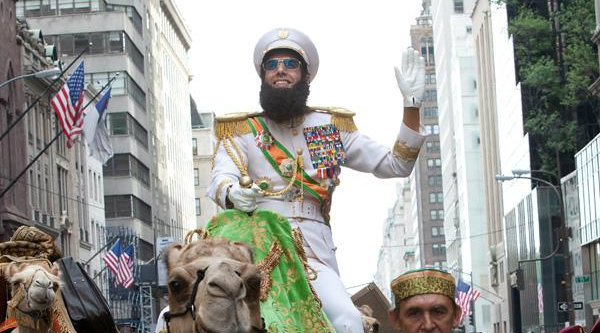

สาธารณรัฐวาดิยา (The Republic of Wadiya)

ธงชาติสาธารณรัฐวาดิยา พลเอก อะลาดีน พร้อมด้วยคู่นอนจากตะวันตกเมืองหลวง: วาดิยา ซิตี้ (wadiya city)
ภาษาราชการ: ภาษาอาหรับ (วาดิยัน)
การปกครอง: เผด็จการรวมศูนย์
ผู้นำ: พลเอก อะลาดีน (Admiral-General Aladeen)
สกุลเงิน: ดีนาร์วาดิยา
สาธารณรัฐวาดิยา เป็นประเทศนภูมิภาคแอฟริกาตะวันออก/ตะวันออกกลาง โดยเป็นรัฐเผด็จการที่มีทรัพยากรน้ำมันจำนวนมาก รวมทั้งเเร่หายากซึ่งเป็นจุดเริ่มต้นในการผลิตพลังงาน และอาวุธนิวเคลียภายในประเทศ โดยถูกปกครองโดยผู้นำเพียงคนเดียว

ประวัติศาสตร์
วาดิยาเป็นประเทศที่มีทรัพยากรน้ำมันจำนวนมหาศาล เทียบเท่าอัตราส่วน 36% ของปริมาณทรัพยากรน้ำมันจากทั่วโลกที่ถูกสำรวจ ทำให้มีความสำคัญทางเศรษฐกิจและความมั่นคงการเมือง แม้จะเป็นประเทศที่ปกครองแบบเผด็จการ แต่ยังคงมีเสถียรภาพจากการควบคุมของผู้นำ


การเมือง
ระบบการเมืองของวาดิยาเป็นแบบรวมศูนย์อำนาจ โดยผู้นำมีอำนาจสูงสุดในทุกด้าน ตั้งแต่เศรษฐกิจ การทหาร กีฬา สื่อ ไปจนถึงวัฒนธรรม
เศรษฐกิจ
เศรษฐกิจพึ่งพาการส่งออกน้ำมันเป็นหลัก ทำให้ประเทศมีรายได้สูง แต่เกิดความเหลื่อมล้ำภายใน สิ่งที่ขาดเเคลนอย่างมากคืออาหารสด ประชาชนในประเทศไม่สามารถเพาะปลูกได้ ทั้งภูมิประเทศ และสภาพภูมิอากาศ ดังนั้น ท่านผู้นำสูงสุดจึงได้ซื้อ ปลาแศลม่อน และเนื้อวากิว เเจกให้กับประชาชนในประเทศทุกระดับชั้น เพื่อประทั้งชีวิต
วัฒนธรรม
วัฒนธรรมของวาดิยาถูกกำหนดโดยรัฐ มีการควบคุมสื่อ และการแสดงออกของประชาชนอย่างเข้มงวดโดยท่านผู้นำ
ข้อเท็จจริงเพิ่มเติม
- เป็นประเทศที่มีการเลือกตั้งโดยตรงจากประชาชน ซึ่งผู้นำคนปัจจุบันได้รับผลการเลือกตั้ง 99.98%
- มีลักษณะเสียดสีการเมืองโลกทุนนิยม
- เป็นประเทศตะวันออกกลางที่มหาอำนาจของโลกไม่กล้ารุกราน
- สื่อลามกเเละการค้าประเวณีเป็นสิ่งผิดกฎหมาย ยกเว้นการได้รับความชื่นชอบโดยท่านผู้นำ